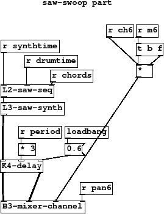
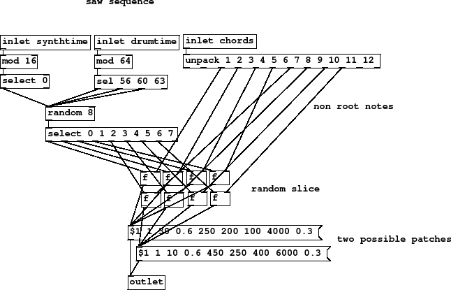
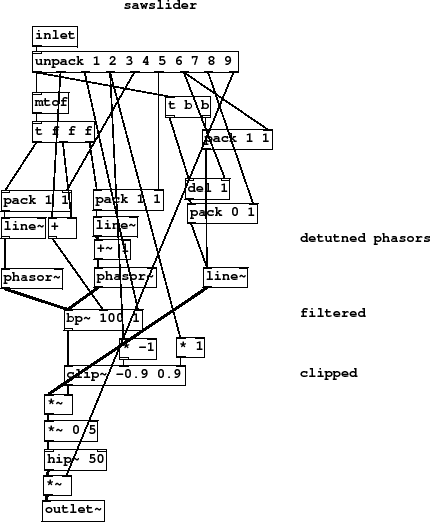

Subsections
Figure 38 summary
This type of sound features in some Pink Floyd songs and became
popular again in 90s chillout/ambient music of artists like
Namlook and Morris. It is a resonant saw pitch sweep going
right beyond the normal range and used at the start or end
of several bars to add new energy or a lead in to a new section.
Figure 38:
L1-sawswoop
|

|
L1-sawswoop.pd
Figure 39 summary
- non root notes
- random slice
- two possible patches
All the notes above 1 and 2 are unpacked from the chord. This composition
originally had 10 and 12 note chords and there are two redundant
values unpacked. Sometimes as a piece evolves, not every
part of stays consistent and interesting "features" may be
happened upon by accident. The result here should to get an extra two
rests, but in fact we occasionally get a zero value note since the redundant floats
are set to 0. I decided to keep this "bug" as part of the composition because
when the note dives to zero it makes a very nice effect.
Two cycles of time are used here, a 16 beat bar and a 64 beat one. This is
to add an extra few beats on 57, 61 and the last beat of each 4 regular
bars. There are two synth patches selected in the sequencer. Notice parameter substitution
occurs here in the sequencer this time, not in the synth, so we can choose different sounds
on different beats.
Figure 39:
L2-saw-seq
|

|
L2-saw-seq.pd
Figure 40 summary
- detutned phasors
- filtered
- clipped
There's quite a lot to see in this synth and it's layout is
not easy to read. Basically, two phasors are at the
core of the sound, detuned from each other so that one lags
behind the other when they move but they eventually reach the
same value. The summed phasors are filtered with
bandpass [bp~ 100 1] and clipped [clip~ -0.9 0.9]. The
filter resonance is set quite high by an incoming parameter.
Figure 40:
L3-saw-synth
|

|
L3-saw-synth.pd
Figure 41 summary
Few occurances of this sparse part occur in the composition.
It also varies quite a lot as the last state of
of the oscillators makes a difference to how the next note will
play out. Sometimes you hear it sweep right up to the limits of
the keyboard and then back to zero where it makes a clicking noise
as the phasor frequency gets very low.
L4-saw-play.pd
L4-saw-play.ogg
Andy Farnell
http://obiwannabe.co.uk/